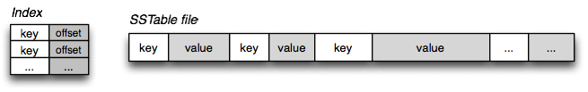

LSM-tree and Tuning
Preface
"As many people out there I like to adapt new technologies. There is one rule though, I need to understand what I’m actually using. It isn’t necessarily about exact implementation but main concepts behind it."
Databases in Different Scenarios
B-tree: A Standard Index Implementation for Relational Database
Lies, Damned Lies and Benchmarks
Benchmark Results of Samsung 960 Evo NVMe SSD
How can we transform random writes to sequential writes?
Log-Structured Merge-Tree
Used in a range of modern databases
- Key-Value Stores: BigTable, Cassandra, HBase, LevelDB, Riak, RocksDB, WiredTiger
- Time-Series Databases: InfluxDB
- Relational Databases: SQLite4, MyRocks
SSTable: Sorted String Table
Writes are collected in memory
then sort and flush to disk
Compaction: sort and merge
Optimizing reads is easier than optimising writes
Compaction Strategies
| Name | Feature | Representative |
|---|---|---|
| Size-Tiered Compaction | Update Optimized | Cassandra |
| Leveled Compaction | Lookup Optimized | RocksDB |
- Level 0 is the buffer which in memory
- Level 1 and 2 are on disk
Size-ratio: Ratio between the capacities of different levels

LSM-tree with a really small size-ratio
LSM-tree with a really high size-ratio
Trade-off Curve
The state of the art on Trade-off Curve
Weaknesses of LSM-tree
Space Amplification and Write Amplification
LSM Tuning
- Monkey by Harvard DASlab, 2017
- Dostoevsky by Harvard DASlab, 2018
- Universal Compaction by Facebook RocksDB, 2018
- ...
Monkey: Optimal Navigable Key-Value Store
Monkey improves read performance (50-90% lookup cost in the worst-case) by optimal allocation of memory to the bloom filters
Dostoevsky: Space-Time Optimized Evolvable Scalable Key-Value Store
Lazy Leveling and Cost breakdown
Let us talk it in simple way
- Tiering is great for: updates
- Leveling is great for: short range lookup
- Lazy Leveling is great for: updates & point lookup
Fluid LSM-tree and its three parameters
- T = size ratio
- K = runs at smaller levels
- Z = runs at largest level
If we set ...
- Z=1, K=1, it will be Leveling
- Z=1, K=T-1, it will be Lazy Leveling
- Z=T-1, K=T-1, it will be Tiering
References
- Designing Data-Intensive Applications, O'Reilly Book 2017
- Log Structured Merge Trees, ben stopford Blog
- Power of the Log: LSM & Append Only Data Structures, QCon 2017
- Monkey: Optimal Navigable Key-Value Store, ACM SIGMOD 2O17
- Dostoevsky: Better Space-Time Trade-Offs for LSM-Tree Based Key-Value Stores via Adaptive Removal of Superfluous Merging, ACM SIGMOD 2018
- Universal Compaction, RocksDB Wiki